Questionário de Avaliação Comportamental

1) Eu sou:
A) Idealista, criativo e visionário
B) Divertido, espiritual e benéfico
C) Confiável, meticuloso e previsível
D) Focado, determinado e persistente
2) Eu gosto de:
A) Ser piloto
B) Conversar com os passageiros
C) Planejar a viagem
D) Explorar novas rotas
3) Se você quiser se dar bem comigo:
A) Me dê liberdade
B) Me deixe saber sua expectativa
C) Lidere, siga ou saia do caminho
D) Seja amigável, carinhoso e compreensivo
4) Para conseguir obter bons resultados é preciso:
A) Ter incertezas
B) Controlar o essencial
C) Diversão e celebração
D) Planejar e obter recursos
5) Eu me divirto quando:
A) Estou me exercitando
B) Tenho novidades
C) Estou com os outros
D) Determino as regras
6) Eu penso que:
A) Unidos venceremos, divididos perderemos
B) O ataque é melhor que a defesa
C) É bom ser manso, mas andar com um porrete
D) Um homem prevenido vale por dois
7) Minha preocupação é:
A) Gerar a ideia global
B) Fazer com que as pessoas gostem
C) Fazer com que funcione
D) Fazer com que aconteça
8) Eu prefiro:
A) Perguntas a respostas
B) Ter todos os detalhes
C) Vantagens a meu favor
D) Que todos tenham a chance de serem ouvidos
9) Eu gosto de:
A) Fazer progresso
B) Construir memórias
C) Fazer sentido
D) Tornar as pessoas confortáveis
10) Eu gosto de chegar:
A) Na frente
B) Junto
C) Na hora
D) Em outro lugar
11) Um ótimo dia pra mim é quando:
A) Consigo fazer muitas coisas
B) Me divirto com meus amigos
C) Tudo segue conforme planejado
D) Desfruto de coisas novas e estimulantes
12) Eu vejo a morte como:
A) Uma grande aventura misteriosa
B) Oportunidade para rever os falecidos
C) Um modo de receber recompensas
D) Algo que sempre chega muito cedo
13) Minha filosofia de vida é:
A) Há ganhadores e perdedores, e eu acredito ser um ganhador
B) Para eu ganhar, ninguém precisa perder
C) Para ganhar, é preciso seguir as regras
D) Para ganhar, é necessário inventar novas regras
14) Eu sempre gostei de:
A) Explorar
B) Evitar surpresas
C) Focalizar a meta
D) Realizar uma abordagem natural
15) Eu gosto de mudanças se:
A) Me der uma vantagem competitiva
B) For divertido e puder ser compartilhado
C) Me der mais liberdade e variedade
D) Melhorar ou me der mais controle
16) Não existe nada de errado em:
A) Se colocar na frente
B) Colocar os outros na frente
C) Mudar de ideia
D) Ser consistente
17) Eu gosto de buscar conselhos de:
A) Pessoas bem sucedidas
B) Anciões e conselheiros
C) Autoridades no assunto
D) Lugares, os mais estranhos
18) Meu lema é:
A) Fazer o que precisa ser feito
B) Fazer bem feito
C) Fazer junto com o grupo
D) Simplesmente fazer
19) Eu gosto de:
A) Complexidade, mesmo se confuso
B) Ordem e sistematização
C) Calor humano e animação
D) Coisas claras e simples
20) Tempo para mim é:
A) Algo que detesto desperdiçar
B) Um grande ciclo
C) Uma flecha que leva ao inevitável
D) Irrelevante
21) Se eu fosse bilionário:
A) Faria doações para muitas entidades
B) Criaria uma poupança avantajada
C) Faria o que desse na cabeça
D) Me exibiria bastante para algumas pessoas
22) Eu acredito que:
A) O destino é mais importante que a jornada
B) A jornada é mais importante que o destino
C) Um centavo economizado é um centavo ganho
D) Bastam um navio e uma estrela para navegar
23) Eu acredito também que:
A) Aquele que hesita está perdido
B) De grão em grão a galinha enche o papo
C) O que vai, volta
D) Um sorriso ou uma careta é o mesmo para quem é cego
24) Eu acredito ainda que:
A) É melhor prudência do que arrependimento
B) A autoridade deve ser desafiada
C) Ganhar é fundamental
D) O coletivo é mais importante do que o individual
25) Eu penso que:
A) Não é fácil ficar encurralado
B) É preferível olhar, antes de pular
C) Duas cabeças pensam melhor do que uma
D) Se você não tem condições de competir, não compita
Ir para o próximo